(problema de
ponto fixo). Um ponto
(problema de
ponto fixo). Um ponto  tal que 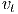 é chamado de ponto fixo
da função 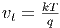. Geometricamente, um ponto fixo de uma função é um
ponto de interseção entre a reta 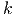 com o gráfico da função (veja,
Figura 3.3).
tal que 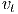 é chamado de ponto fixo
da função 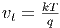. Geometricamente, um ponto fixo de uma função é um
ponto de interseção entre a reta 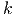 com o gráfico da função (veja,
Figura 3.3).
Nesta seção, discutimos a abordagem da iteração do ponto fixo para a solução
numérica de equações de uma variável real. Observamos que sempre podemos
reescrever uma equação da forma 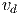 (problema de encontrar os zeros de
uma função) em uma equação equivalente na forma (problema de
ponto fixo). Um ponto tal que 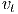 é chamado de ponto fixo
da função 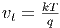. Geometricamente, um ponto fixo de uma função é um
ponto de interseção entre a reta 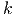 com o gráfico da função (veja,
Figura 3.3).
Exemplo 3.3.1. Resolver a equação 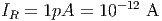 é equivalente a resolver
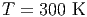, com 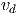. Estes são equivalentes a resolver 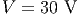,
com  . Ou seja, temos:
. Ou seja, temos:
 |
Dada uma função  , a iteração do ponto fixo consiste em computar a
seguinte sequência recursiva:
, a iteração do ponto fixo consiste em computar a
seguinte sequência recursiva:
 |
onde  é uma aproximação inicial do ponto fixo.
é uma aproximação inicial do ponto fixo.
Exemplo 3.3.2 (Método babilônico). O método babilônico3
é de uma iteração de ponto fixo para extrair a raiz quadrada de um número
positivo  , i.e. para resolver a equação
, i.e. para resolver a equação  .
.
Seja  uma aproximação para
uma aproximação para  . Temos três possibilidades:
. Temos três possibilidades:


Ou seja, uma aproximação melhor para  está no intervalo entre 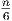 e 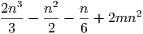 que
pode ser aproximada como:
está no intervalo entre 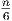 e 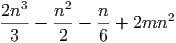 que
pode ser aproximada como:
Aplicando esse método repetidas vezes, podemos construir a iteração (de ponto fixo):
Por exemplo, para obter uma aproximação para 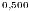, podemos iniciar com a
aproximação inicial 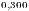 e 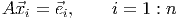. Então, tomamos  e daí seguem as
aproximações:
e daí seguem as
aproximações:

O método babilônico sugere que a iteração do ponto fixo pode ser uma abordagem eficiente para a solução de equações. Ficam, entretanto, as seguintes perguntas:
 é um ponto
fixo?
é um ponto
fixo?
A segunda pergunta é a mais fácil de ser respondida. No caso de  ser
contínua, se
ser
contínua, se  , então:
, então:
 |
Antes de respondermos as perguntas acima, vejamos mais um exemplo.
Exemplo 3.3.3. Considere o problema de encontrar o zero da função
 . Uma maneira geral de construir um problema de ponto
fixo equivalente é o seguinte:
. Uma maneira geral de construir um problema de ponto
fixo equivalente é o seguinte:
 |
para qualquer parâmetro  . Consideremos, então, as seguintes duas
funções:
. Consideremos, então, as seguintes duas
funções:
 |
Notamos que o ponto fixo destas duas funções coincide com o zero de  .
Construindo as iterações do ponto fixo:
.
Construindo as iterações do ponto fixo:
 |
tomando  , obtemos os resultados apresentados na Tabela 3.2.
Observamos que, enquanto, a iteração do ponto fixo com a função
, obtemos os resultados apresentados na Tabela 3.2.
Observamos que, enquanto, a iteração do ponto fixo com a função  (
( ) parece divergir, a iteração com a função
) parece divergir, a iteração com a função  (
( ) parece
convergir.
) parece
convergir.
Afim de estudarmos a convergência da iteração do ponto fixo, apresentamos o Teorema do ponto fixo.
O Teorema do ponto fixo nos fornece condições suficientes para a existência e unicidade do ponto fixo, bem como para a convergência das iterações do método.
Observação 3.3.1. Seja ![g : [a,b] → [a,b]](main1158x.png) , y=g(x).
, y=g(x).
 é uma contração, então
é uma contração, então  função contínua.
função contínua.
 ,
,  , para todo
, para todo ![x ∈ [a,b]](main1163x.png) , então
, então  é uma
contração.
é uma
contração.
Teorema 3.3.1 (Teorema do ponto fixo). Se ![g : [a,b] → [a,b]](main1165x.png) é uma
contração, então existe um único ponto
é uma
contração, então existe um único ponto ![x∗ ∈ [a,b]](main1166x.png) tal que
tal que  ,
i.e.
,
i.e.  é ponto fixo de
é ponto fixo de  . Além disso, a sequência
. Além disso, a sequência  dada
por:
dada
por:
 |
converge para  para qualquer
para qualquer ![x(1) ∈ [a,b]](main1173x.png) .
.
Demonstração. Começamos demonstrando que existe pelo menos um
ponto fixo. Para tal definimos a função  e observamos
que:
e observamos
que:
 |
e
 |
Se  ou
ou  , então o ponto fixo existe. Caso contrário, as
desigualdades são estritas e a
, então o ponto fixo existe. Caso contrário, as
desigualdades são estritas e a  muda de sinal no intervalo. Como esta
função é contínua, pelo teorema de Bolzano 3.1.1, existe um ponto 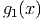 no
intervalo
muda de sinal no intervalo. Como esta
função é contínua, pelo teorema de Bolzano 3.1.1, existe um ponto 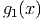 no
intervalo  tal que
tal que  , ou seja,
, ou seja,  . Isto mostra a
existência.
. Isto mostra a
existência.
Para provar que o ponto fixo é único, observamos que se  e
e  são pontos
fixos, eles devem ser iguais, pois:
são pontos
fixos, eles devem ser iguais, pois:
 |
A desigualdade  com
com  implica
implica  .
.
Para demonstrar a convergência da sequência, observamos que:
 |
Daí, temos:
 |
Portanto, como  , temos:
, temos:
 |
ou seja,  quando
quando  .
.

Exemplo 3.3.4. Mostre que o Teorema do ponto fixo se aplica a função
 no intervalo
no intervalo ![[1∕2, 1]](main1198x.png) , i.e. que a iteração do ponto fixo
converge para a solução da equação
, i.e. que a iteração do ponto fixo
converge para a solução da equação  .
.
Solução. Basta mostrarmos que:
![g([1∕2,1]) ⊆ [1∕2,1]](main1200x.png) ;
;
Para provar a), observamos que  é decrescente no intervalo, pelo que
temos:
é decrescente no intervalo, pelo que
temos:
 |
Como ![[0,54, 0,88 ] ⊆ [0,5, 1]](main1204x.png) , temos o item a).
, temos o item a).
Para provar o item b), observamos que:
 |
Da mesma forma, temos a estimativa:
 |
Assim,  temos a desigualdade com
temos a desigualdade com  .
.
A Tabela 3.3 apresenta o comportamento numérico da iteração do ponto fixo:


Seja ![g : [a,b]](main1227x.png) uma função
uma função ![0
C [a,b]](main1228x.png) e
e  um ponto fixo de
um ponto fixo de  . Então
. Então  é dito estável se existe uma região
é dito estável se existe uma região  chamada bacia de atração tal
que
chamada bacia de atração tal
que  é convergente sempre que
é convergente sempre que  .
.
Proposição 3.3.1 (Teste de convergência). Se
![g ∈ C1 [a,b]](main1235x.png) e
e  , então
, então  é estável. Se
é estável. Se  é instável
e o teste é inconclusivo quando
é instável
e o teste é inconclusivo quando  .
.


 e (direita)
e (direita)  . Veja Exemplo 3.3.5.
. Veja Exemplo 3.3.5.
Exemplo 3.3.5. No Exemplo 3.3.3 observamos que a função  nos
forneceu uma iteração divergente, enquanto que a função
nos
forneceu uma iteração divergente, enquanto que a função  forneceu uma
iteração convergente (veja a Figura 3.4. A razão destes comportamentos é
explicada pelo teste da convergência. Com efeito, sabemos que o ponto fixo destas
funções está no intervalo
forneceu uma
iteração convergente (veja a Figura 3.4. A razão destes comportamentos é
explicada pelo teste da convergência. Com efeito, sabemos que o ponto fixo destas
funções está no intervalo ![[1,6,1,8]](main1246x.png) e temos:
e temos:
![|g′(x)| = |1 − 0,5(x + 1)ex| > 4,8, ∀x ∈ [1,6,1,8],
1](main1247x.png) |
enquanto:
![|g′2(x )| = |1 − 0,05 (x + 1)ex| < 0,962, ∀x ∈ [1,6,1,8].](main1248x.png) |
A fim de compreendermos melhor os conceitos de estabilidade e convergência,
considere uma função  com um ponto fixo
com um ponto fixo  e analisemos o
seguinte processo iterativo:
e analisemos o
seguinte processo iterativo:

 pode ser aproximada por seu polinômio de
Taylor em torno do ponto fixo:
pode ser aproximada por seu polinômio de
Taylor em torno do ponto fixo: 
Substituindo na relação de recorrência, temos


 .
.
Observação 3.3.2. A análise acima, concluímos:
 até o ponto fixo
até o ponto fixo  está
diminuindo a cada passo.
está
diminuindo a cada passo.
 , então, a distância de
, então, a distância de  até o ponto fixo
até o ponto fixo  está
aumentando a cada passo.
está
aumentando a cada passo.
 , então, nossa aproximação de primeiro ordem não é
suficiente para compreender o comportamento da sequência.
, então, nossa aproximação de primeiro ordem não é
suficiente para compreender o comportamento da sequência.
Na prática, quando se aplica uma iteração como esta, não se conhece de antemão
o valor do ponto fixo  . Assim, o erro
. Assim, o erro  precisa ser estimado
com base nos valores calculados
precisa ser estimado
com base nos valores calculados  . Uma abordagem frequente é analisar a
evolução da diferença entre dois elementos da sequência:
. Uma abordagem frequente é analisar a
evolução da diferença entre dois elementos da sequência:

A pergunta natural é: Será que o erro  é pequeno quando
é pequeno quando
 for pequeno?
for pequeno?
Para responder a esta pergunta, observamos que


Usamos também as expressões:


Observação 3.3.3. Tendo em mente a relação  ,
concluímos:
,
concluímos:
 , o esquema é alternante, isto é, o sinal do erro
se altera a cada passo. O erro
, o esquema é alternante, isto é, o sinal do erro
se altera a cada passo. O erro  pode ser estimado diretamente da
diferença
pode ser estimado diretamente da
diferença  , pois o denominador
, pois o denominador  .
.
 , o esquema é monótono e
, o esquema é monótono e  , pelo
que o erro
, pelo
que o erro  é maior que a diferença
é maior que a diferença  . A relação será tão
mais importante quando mais próximo da unidade for
. A relação será tão
mais importante quando mais próximo da unidade for  , ou seja,
quando mais lenta for a convergência. Para estimar o erro em função
da diferença
, ou seja,
quando mais lenta for a convergência. Para estimar o erro em função
da diferença  , observamos que
, observamos que  e
e


E 3.3.1. Resolver a equação  é equivalente a calcular os pontos
fixos da função
é equivalente a calcular os pontos
fixos da função  (veja o Exemplo 3.3.1). Use a iteração do
ponto fixo
(veja o Exemplo 3.3.1). Use a iteração do
ponto fixo  com
com  para obter uma aproximação
de uma das soluções da equação dada com
para obter uma aproximação
de uma das soluções da equação dada com  dígitos significativos.
dígitos significativos.
Resposta. 
E 3.3.2. Mostre que a equação:
 |
possui uma única solução no intervalo ![[0,1]](main1299x.png) . Use a iteração do ponto fixo e
encontre uma aproximação para esta solução com 4 dígitos significativos.
. Use a iteração do ponto fixo e
encontre uma aproximação para esta solução com 4 dígitos significativos.
Resposta. 
E 3.3.3. Mostre que a equação  é equivalente às seguintes
equações:
é equivalente às seguintes
equações:
 |
Destas, considere as seguintes iterações de ponto fixo:


Tomando  , verifique se estas sequências são convergentes.
, verifique se estas sequências são convergentes.
Resposta. Tomemos  como aproximação inicial para a solução deste problema, iterando a primeira sequência a),
obtemos:
como aproximação inicial para a solução deste problema, iterando a primeira sequência a),
obtemos:

Iterando a segunda sequência b), obtemos:

Este experimento numérico sugere que a iteração a) converge para  e a iteração b) não é convergente.
e a iteração b) não é convergente.
E 3.3.4. Verifique (analiticamente) que a única solução real da equação:
 |
é ponto fixo das seguintes funções:


Implemente o processo iterativo  para
para  e compare o
comportamento. Discuta os resultados com base na teoria estudada.
e compare o
comportamento. Discuta os resultados com base na teoria estudada.
E 3.3.5. Verifique (analiticamente) que a única solução real da equação:
 |
é ponto fixo das seguintes funções:


Implemente o processo iterativo  para
para  e compare o
comportamento.Discuta os resultados com base na teoria estudada.
e compare o
comportamento.Discuta os resultados com base na teoria estudada.
E 3.3.6. Encontre a solução de cada equação com erro absoluto inferior a
 .
.
 no intervalo
no intervalo  .
.
 no intervalo
no intervalo  .
.
 no intervalo
no intervalo  .
.E 3.3.7. Encontre numericamente as três primeiras raízes positivas da equação dada por:
 |
com erro absoluto inferior a  .
.
Resposta.  com
com  .
.
E 3.3.10. Considere os seguintes processos iterativos:
|
| (3.1) |
Use o teorema do ponto fixo para verificar que cada um desses processos converge
para a solução da equação  de 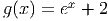. Observe o comportamento
numérico dessas sequências. Qual estabiliza mais rápido com cinco casas
decimais? Discuta.
de 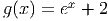. Observe o comportamento
numérico dessas sequências. Qual estabiliza mais rápido com cinco casas
decimais? Discuta.
Dica: Verifique que ![cos([0.5,1]) ⊆ [0.5,1]](main1339x.png) e depois a mesma identidade para a
função 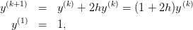.
e depois a mesma identidade para a
função 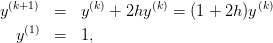.
E 3.3.11. Use o teorema do ponto fixo aplicado a um intervalo adequado para mostrar que a função 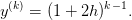 possui um ponto fixo estável.
E 3.3.12 (title=Fluidos). Na hidráulica, o fator de atrito de Darcy é dado pela implicitamente pela equação de Colebrook-White:
 é o fator de atrito,
é o fator de atrito,  é a rugosidade do tubo em metros, 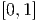
é o raio hidráulico em metros e 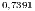 é o número de Reynolds. Considere
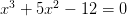, 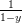 e 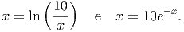 e obtenha o valor de
é a rugosidade do tubo em metros, 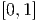
é o raio hidráulico em metros e 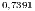 é o número de Reynolds. Considere
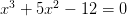, 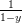 e 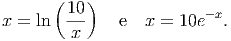 e obtenha o valor de  pela iteração:
pela iteração:

Resposta. 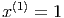
E 3.3.13. Encontre uma solução aproximada para equação algébrica
 , usando
cada uma dessas expressões. Discuta sucintamente o resultado obtido. Dica:
Este caso é semelhante ao problema 3.2.7.
, usando
cada uma dessas expressões. Discuta sucintamente o resultado obtido. Dica:
Este caso é semelhante ao problema 3.2.7.
E 3.3.14. Considere que  satisfaz a seguinte relação de recorrência:
satisfaz a seguinte relação de recorrência:

 e
e  são constantes. Prove que
são constantes. Prove que

 quando
quando  .
.
E 3.3.15 (title=Convergência lenta). Considere o seguinte esquema iterativo:

 .
.
 . Qual o valor é produzido pelo
esquema numérico? Qual o desvio entre o valor obtido pelo esquema
numérico e o valor do limite obtido no item a? Discuta. (Dica: Você
não deve implementar o esquema iterativo, obtendo o valor de
. Qual o valor é produzido pelo
esquema numérico? Qual o desvio entre o valor obtido pelo esquema
numérico e o valor do limite obtido no item a? Discuta. (Dica: Você
não deve implementar o esquema iterativo, obtendo o valor de  analiticamente)
analiticamente)
E 3.3.16 (title=Convergência sublinear). Considere o seguinte esquema iterativo:
![x(n+1) = x(n) − [x(n)]3, x (n) ≥ 0](main1369x.png)
 . Prove que
. Prove que  é sequência de número reais positivos
convergindo para zero. Verifique que são necessários mais de mil passos para
que
é sequência de número reais positivos
convergindo para zero. Verifique que são necessários mais de mil passos para
que  se torne menor que
se torne menor que  .
.
E 3.3.17 (title=Taxa de convergência).
 possui um único ponto fixo estável o intervalo
possui um único ponto fixo estável o intervalo
![[ 1-,1]
10](main1375x.png) . Construa um método iterativo 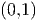 para
encontrar esse ponto fixo. Use o Scilab para encontrar o valor numérico
do ponto fixo.
. Construa um método iterativo 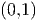 para
encontrar esse ponto fixo. Use o Scilab para encontrar o valor numérico
do ponto fixo.
 que também é o ponto fixo da função
que também é o ponto fixo da função  do item a. Use o Scilab
para encontrar o valor numérico do ponto fixo através da iteração
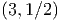. Qual método é mais rápido?
do item a. Use o Scilab
para encontrar o valor numérico do ponto fixo através da iteração
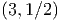. Qual método é mais rápido?E 3.3.18 (title=Esquemas oscilantes). (Esquemas oscilantes)

 . Mostre que
. Mostre que  possui
dois pontos fixos que não são pontos fixos de
possui
dois pontos fixos que não são pontos fixos de  .
.
 é inicializado com um ponto fixo de
é inicializado com um ponto fixo de  que não é
ponto fixo de
que não é
ponto fixo de  ?
?
E 3.3.19 (title= Aceleração de convergência - introdução ao método de Newton).
Mostre que se  possui uma raiz
possui uma raiz  então a
então a  é um ponto fixo de
é um ponto fixo de
 . Encontre uma condição em
. Encontre uma condição em  para que o ponto
fixo
para que o ponto
fixo  de
de  seja estável. Encontre uma condição em
seja estável. Encontre uma condição em  para que
para que
 .
.
E 3.3.20 (title=Aceleração de convergência - introdução ao método de Newton).
Considere que  satisfaz a seguinte relação de recorrência:
satisfaz a seguinte relação de recorrência:

 é uma constante. Suponha que
é uma constante. Suponha que  possui um zero em
possui um zero em  .
Aproxime a função
.
Aproxime a função  em torno de
em torno de  por
por

 você escolheria para que a
sequência
você escolheria para que a
sequência  convirja rapidamente para
convirja rapidamente para  .
.
E 3.3.21. Considere o problema da questão 3.2.7 e dois seguintes esquemas iterativos.
![( [ ( (n))]
|{ I(n+1) = 1R- V − vtln 1 + IIR- ,n > 0
A | (0)
( I = 0
( e [ ( ) ]
|{ I(n+1) = I exp V−RI(n) − 1 ,n > 0
B R vt
|( I(0) = 0](main1412x.png)

 .
.


![g : [a,b] → [a,b]](main1156x.png)


 que
passa pelo ponto
que
passa pelo ponto  .
.